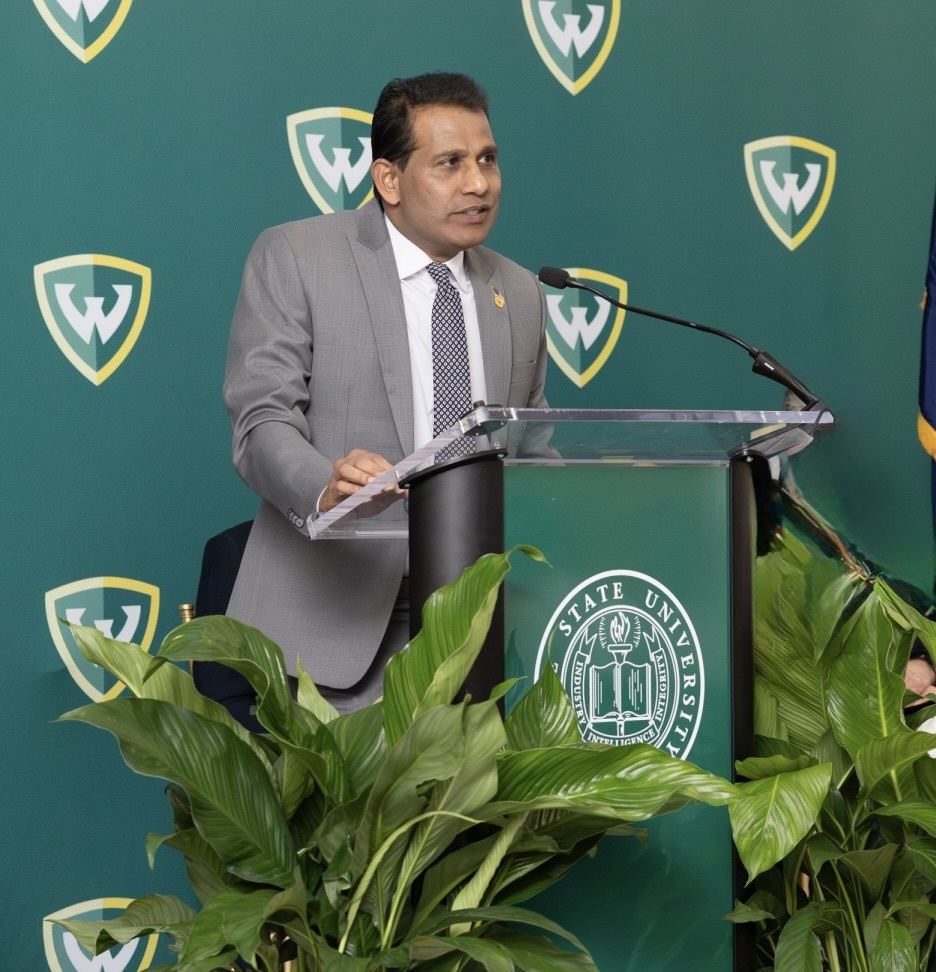

Governor, Wayne State University
A proud alumnus and elected Governor, Sunny Reddy champions academic excellence, student success, and the integrity of higher education at Wayne State University.
Sunny Reddy at Wayne State
Sunny Reddy is an elected Governor of Wayne State University and a proud alumnus. He earned his Master's Degree in Chemical Engineering from Wayne State University in 1994.
His leadership reflects a strong commitment to academic excellence, student success, and maintaining the integrity and strength of higher education.
Leadership Role
Governor, Wayne State University
As a Governor, Sunny helps provide leadership and oversight to support the university's continued growth and academic mission. His focus includes strengthening educational excellence, supporting students, and helping prepare graduates for future career success.
Publicly Stated Principles
Sunny champions STEM education as a pathway to opportunity, supporting programs that connect students with real-world skills and career readiness in technology and engineering fields.
Sunny believes higher education should remain accessible to qualified students and supports initiatives that help reduce financial barriers for Michigan families.